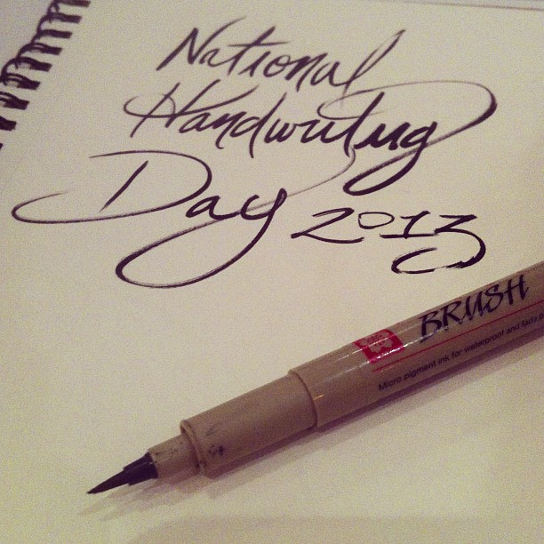

I recently celebrated National Handwriting Day with some people at Weld, a coworking space here in Dallas, and although I must admit I’ve never heard of National Handwriting Day until Kyle Steed posted about it, it was a fun time. (Really, since most of us were practiced at drawing letterforms, it became National Lettering Day for us.)
As I sat writing the copy of a Craigslist ad, the weight of learning and mastering this skill, for both kids and adults, hit me.
Handwriting develops hand-eye coordination, attention to detail, and patience. We should be able to, on command, produce legible hand-writings at the minimum, and writings that are enjoyable to read at best. I’m not necessarily talking about lettering or calligraphy, although some handwriting could double as such, but rather common writing like when taking notes or writing a thank you note. That still a thing, right?
Learn to command your own hand into well-written communication, and I have full confidence you’ll become a more attentive, detail-oriented, patient designer.